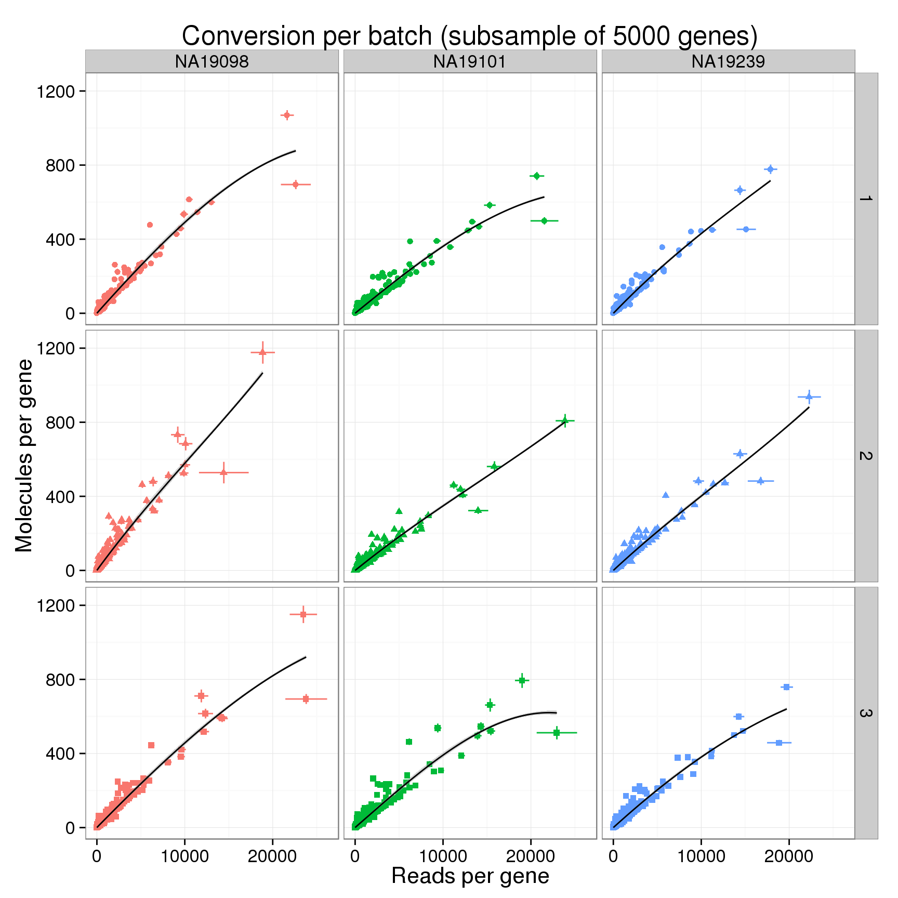
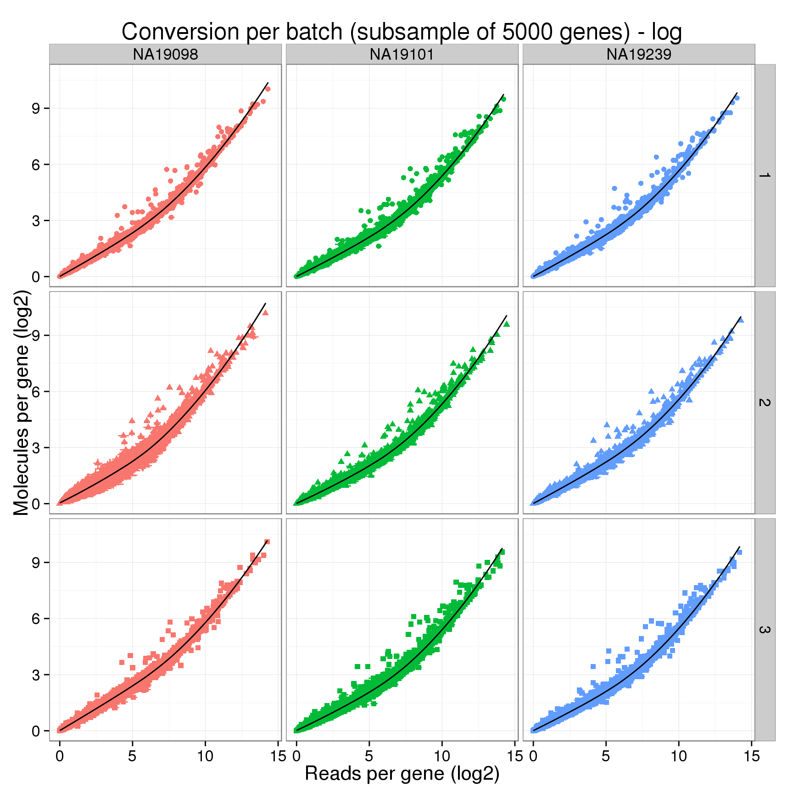
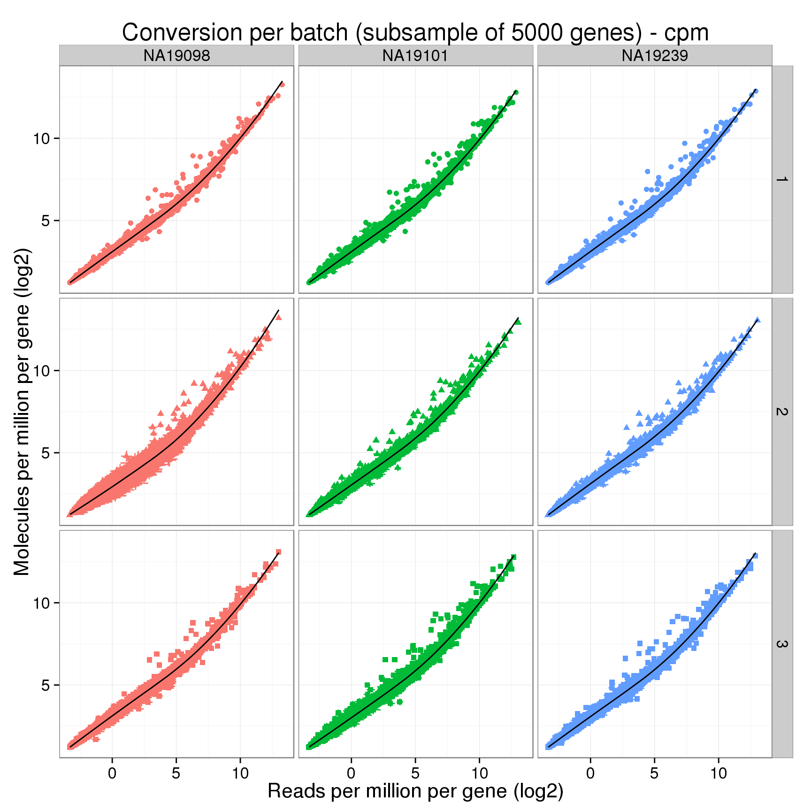
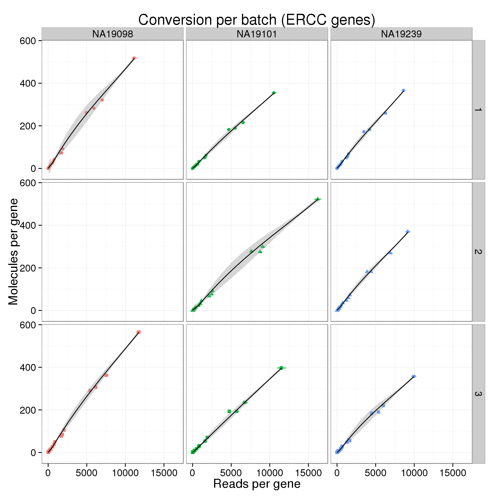
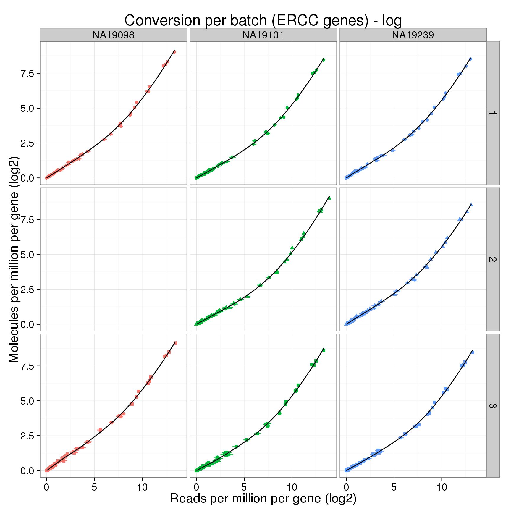
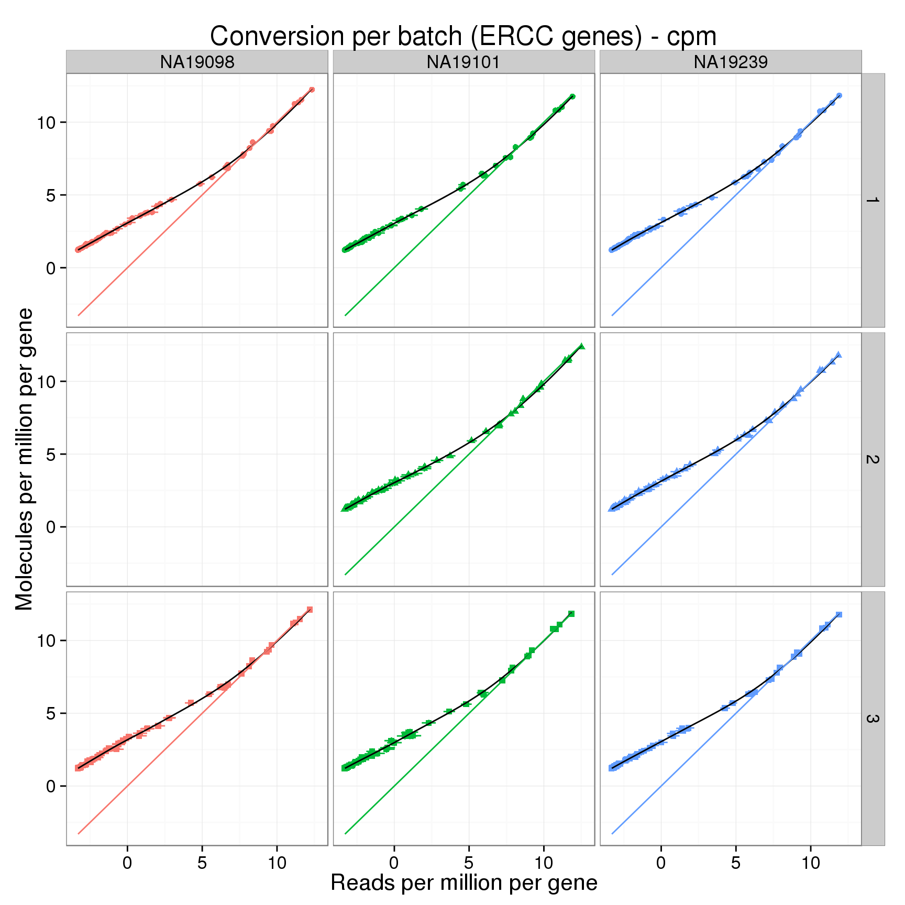

Compare read and molecule counts per batch
2015-08-18
Last updated: 2015-09-08
Code version: 8638af6fb413594e38dd74661e4e85d05c29cf00
Comparing the conversion of reads to molecules for each of the 9 batches. Used three different metrics:
- Raw counts
- Log2 counts (pseudocount of 1)
- Log2 TMM-normalized counts per million (pseudocount of 0.25)
Input
library("dplyr")
library("ggplot2")
theme_set(theme_bw(base_size = 16))
library("edgeR")
source("functions.R")
library("tidyr")Input annotation.
anno <- read.table("../data/annotation.txt", header = TRUE,
stringsAsFactors = FALSE)
head(anno) individual batch well sample_id
1 19098 1 A01 NA19098.1.A01
2 19098 1 A02 NA19098.1.A02
3 19098 1 A03 NA19098.1.A03
4 19098 1 A04 NA19098.1.A04
5 19098 1 A05 NA19098.1.A05
6 19098 1 A06 NA19098.1.A06Input read counts.
reads <- read.table("../data/reads.txt", header = TRUE,
stringsAsFactors = FALSE)Input molecule counts.
molecules <- read.table("../data/molecules.txt", header = TRUE,
stringsAsFactors = FALSE)Input list of quality single cells.
quality_single_cells <- scan("../data/quality-single-cells.txt",
what = "character")Filter
Keep only the single cells that passed the QC filters.
reads <- reads[, colnames(reads) %in% quality_single_cells]
molecules <- molecules[, colnames(molecules) %in% quality_single_cells]
anno <- anno[anno$sample_id %in% quality_single_cells, ]
stopifnot(dim(reads) == dim(molecules),
nrow(anno) == ncol(reads))Only keep the following genes:
- ERCC genes with at least one molecule observed in at least one single cell
ercc_keep <- rownames(molecules)[grepl("ERCC", rownames(molecules)) &
rowSums(molecules) > 1]- The top expressed endogenous genes in terms of mean molecule counts per million
num_genes <- 12000
mean_cpm <- molecules %>%
filter(!grepl("ERCC", rownames(molecules))) %>%
cpm %>%
rowMeans
gene_keep <- rownames(molecules)[!grepl("ERCC", rownames(molecules))][order(mean_cpm, decreasing = TRUE)][1:num_genes]Filter the genes:
reads <- reads[rownames(reads) %in% c(gene_keep, ercc_keep), ]
molecules <- molecules[rownames(molecules) %in% c(gene_keep, ercc_keep), ]Transformation
In addition to comparing the raw counts of reads and molecules, we compare the log2 counts and the log counts per million.
For the log counts, I add a pseudocount of 1.
reads_log <- log2(reads + 1)
molecules_log <- log2(molecules + 1)Calculate cpm for the reads data using TMM-normalization.
norm_factors_reads <- calcNormFactors(reads, method = "TMM")
reads_cpm <- cpm(reads, lib.size = colSums(reads) * norm_factors_reads,
log = TRUE)And for the molecules.
norm_factors_mol <- calcNormFactors(molecules, method = "TMM")
molecules_cpm <- cpm(molecules, lib.size = colSums(molecules) * norm_factors_mol,
log = TRUE)Differences in conversion of reads to molecules
As seen above with the total counts, the conversion of reads to molecules varies between each of the 9 batches. Below I fit a loess transformation to each individually. It would be ideal if we could somehow we could correct for these differences and have them all follow a similar transformation from reads to molecules.
convert_to_long <- function(r, m) {
# Combines reads and molecules into long format for comparison of conversion
#
# r - reads in wide format
# m - molecules in wide format
r <- data.frame(gene = rownames(r), r)
m <- data.frame(gene = rownames(m), m)
r_long <- gather_(r, key = "id", value = "reads",
grep("NA", colnames(r), value = TRUE))
m_long <- gather_(m, key = "id", value = "molecules",
grep("NA", colnames(m), value = TRUE))
r_long <- separate_(r_long, col = "id", sep = "\\.", remove = FALSE,
into = c("individual", "batch", "well"))
stopifnot(r_long$id == m_long$id,
r_long$gene == m_long$gene)
conversion <- cbind(r_long, m_long$molecules)
colnames(conversion)[ncol(conversion)] <- "molecules"
stopifnot(nrow(conversion) == nrow(m_long))
return(conversion)
}In order to be able to make this plot, I have to subsample to fewer genes. Otherwise it runs out of memory.
set.seed(12345)
num_subsampled <- 5000
sub_indices <- sample(1:nrow(reads), num_subsampled)
# counts
reads_sub <- reads[sub_indices, ]
molecules_sub <- molecules[sub_indices, ]
# log counts
reads_log_sub <- reads_log[sub_indices, ]
molecules_log_sub <- molecules_log[sub_indices, ]
# log counts per million
reads_cpm_sub <- reads_cpm[sub_indices, ]
molecules_cpm_sub <- molecules_cpm[sub_indices, ]
# Convert to long format
conversion <- convert_to_long(reads_sub, molecules_sub)
conversion_log <- convert_to_long(reads_log_sub, molecules_log_sub)
conversion_cpm <- convert_to_long(reads_cpm_sub, molecules_cpm_sub)
head(conversion) gene id individual batch well reads molecules
1 ENSG00000118777 NA19098.1.A01 NA19098 1 A01 0 0
2 ENSG00000157800 NA19098.1.A01 NA19098 1 A01 2 2
3 ENSG00000168944 NA19098.1.A01 NA19098 1 A01 0 0
4 ENSG00000158941 NA19098.1.A01 NA19098 1 A01 198 4
5 ENSG00000167671 NA19098.1.A01 NA19098 1 A01 0 0
6 ENSG00000171219 NA19098.1.A01 NA19098 1 A01 0 0Summarize across the single cells for each of the 9 batches.
# counts
conversion_mean <- conversion %>%
filter(well != "bulk") %>%
group_by(individual, batch, gene) %>%
summarize(reads_mean = mean(reads),
reads_sem = sd(reads) / sqrt(length(reads)),
molecules_mean = mean(molecules),
molecules_sem = sd(molecules) / sqrt(length(molecules)))
# log counts
conversion_log_mean <- conversion_log %>%
filter(well != "bulk") %>%
group_by(individual, batch, gene) %>%
summarize(reads_mean = mean(reads),
reads_sem = sd(reads) / sqrt(length(reads)),
molecules_mean = mean(molecules),
molecules_sem = sd(molecules) / sqrt(length(molecules)))
# counts per million
conversion_cpm_mean <- conversion_cpm %>%
filter(well != "bulk") %>%
group_by(individual, batch, gene) %>%
summarize(reads_mean = mean(reads),
reads_sem = sd(reads) / sqrt(length(reads)),
molecules_mean = mean(molecules),
molecules_sem = sd(molecules) / sqrt(length(molecules)))
head(conversion_cpm_mean)Source: local data frame [6 x 7]
Groups: individual, batch
individual batch gene reads_mean reads_sem molecules_mean
1 NA19098 1 ENSG00000000457 -0.8607341 0.3575195 2.574378
2 NA19098 1 ENSG00000000460 2.7123079 0.3738981 4.629304
3 NA19098 1 ENSG00000001460 0.4673185 0.3861463 3.414075
4 NA19098 1 ENSG00000001617 -1.7289385 0.2945758 2.027832
5 NA19098 1 ENSG00000002016 -2.0541566 0.2846078 1.898482
6 NA19098 1 ENSG00000002549 3.9782091 0.3088070 5.525236
Variables not shown: molecules_sem (dbl)Counts
Compare the counts.
conver_plot_counts <- ggplot(conversion_mean,
aes(x = reads_mean, y = molecules_mean, col = individual,
shape = as.factor(batch))) +
geom_point() +
geom_errorbar(aes(ymin = molecules_mean - molecules_sem,
ymax = molecules_mean + molecules_sem)) +
geom_errorbarh(aes(xmin = reads_mean - reads_sem,
xmax = reads_mean + reads_sem)) +
geom_smooth(method = "loess", color = "black") +
facet_grid(batch ~ individual) +
theme(legend.position = "none") +
labs(x = "Reads per gene",
y = "Molecules per gene",
title = sprintf("Conversion per batch (subsample of %d genes)", num_subsampled))
conver_plot_counts
Log2 counts
Compare the log counts.
conver_plot_log <- conver_plot_counts %+%
conversion_log_mean +
geom_line(aes(x = reads_mean, y = reads_mean)) +
labs(x = "Reads per gene (log2)",
y = "Molecules per gene (log2)",
title = sprintf("Conversion per batch (subsample of %d genes) - log", num_subsampled))
conver_plot_log
Log2 counts per million
Compare the counts per million.
conver_plot_cpm <- conver_plot_log %+%
conversion_cpm_mean +
labs(x = "Reads per million per gene (log2)",
y = "Molecules per million per gene (log2)",
title = sprintf("Conversion per batch (subsample of %d genes) - cpm", num_subsampled))
conver_plot_cpm + geom_line(aes(x = reads_mean, y = reads_mean))
Now visualizing only the ERCC.
conversion_ercc <- convert_to_long(reads[grep("ERCC", rownames(reads)), ],
molecules[grep("ERCC", rownames(molecules)), ])
conversion_ercc_log <- convert_to_long(reads_log[grep("ERCC", rownames(reads_log)), ],
molecules_log[grep("ERCC", rownames(molecules_log)), ])
conversion_ercc_cpm <- convert_to_long(reads_cpm[grep("ERCC", rownames(reads_cpm)), ],
molecules_cpm[grep("ERCC", rownames(molecules_cpm)), ])
# Remove 19098 batch 2 because the outlier throws off the axes
conversion_ercc <- conversion_ercc[!(conversion_ercc$individual == "NA19098" &
conversion_ercc$batch == 2), ]
conversion_ercc_log <- conversion_ercc_log[!(conversion_ercc_log$individual == "NA19098" &
conversion_ercc_log$batch == 2), ]
conversion_ercc_cpm <- conversion_ercc_cpm[!(conversion_ercc_cpm$individual == "NA19098" &
conversion_ercc_cpm$batch == 2), ]# counts
conversion_ercc_mean <- conversion_ercc %>%
filter(well != "bulk") %>%
group_by(individual, batch, gene) %>%
summarize(reads_mean = mean(reads),
reads_sem = sd(reads) / sqrt(length(reads)),
molecules_mean = mean(molecules),
molecules_sem = sd(molecules) / sqrt(length(molecules)))
# log counts
conversion_ercc_log_mean <- conversion_ercc_log %>%
filter(well != "bulk") %>%
group_by(individual, batch, gene) %>%
summarize(reads_mean = mean(reads),
reads_sem = sd(reads) / sqrt(length(reads)),
molecules_mean = mean(molecules),
molecules_sem = sd(molecules) / sqrt(length(molecules)))
# counts per million
conversion_ercc_cpm_mean <- conversion_ercc_cpm %>%
filter(well != "bulk") %>%
group_by(individual, batch, gene) %>%
summarize(reads_mean = mean(reads),
reads_sem = sd(reads) / sqrt(length(reads)),
molecules_mean = mean(molecules),
molecules_sem = sd(molecules) / sqrt(length(molecules)))
head(conversion_ercc_cpm_mean)Source: local data frame [6 x 7]
Groups: individual, batch
individual batch gene reads_mean reads_sem molecules_mean
1 NA19098 1 ERCC-00002 11.443245 7.161031e-02 11.357225
2 NA19098 1 ERCC-00003 7.789998 1.437894e-01 7.802351
3 NA19098 1 ERCC-00004 9.740596 8.954873e-02 9.725388
4 NA19098 1 ERCC-00009 6.684334 1.715310e-01 6.895313
5 NA19098 1 ERCC-00012 -3.253281 3.527606e-02 1.267489
6 NA19098 1 ERCC-00013 -3.303453 2.878603e-17 1.218331
Variables not shown: molecules_sem (dbl)ERCC counts
conver_plot_ercc <- conver_plot_counts %+%
conversion_ercc_mean +
labs(title = "Conversion per batch (ERCC genes)")
conver_plot_ercc
ERCC log2 counts
conver_plot_ercc_log <- conver_plot_log %+%
conversion_ercc_log_mean +
labs(x = "Reads per million per gene (log2)",
y = "Molecules per million per gene (log2)",
title = "Conversion per batch (ERCC genes) - log")
conver_plot_ercc_log
ERCC log2 counts per million
conver_plot_ercc_cpm <- conver_plot_log %+%
conversion_ercc_cpm_mean +
labs(x = "Reads per million per gene",
y = "Molecules per million per gene",
title = "Conversion per batch (ERCC genes) - cpm")
conver_plot_ercc_cpm
Comparing loess curves
conversion_chunk <- filter(conversion_cpm_mean, individual == "NA19101", batch == 1)
dim(conversion_chunk)[1] 5000 7head(conversion_chunk)Source: local data frame [6 x 7]
Groups: individual, batch
individual batch gene reads_mean reads_sem molecules_mean
1 NA19101 1 ENSG00000000457 -2.2707890 0.2789448 1.834098
2 NA19101 1 ENSG00000000460 1.9943078 0.4270220 4.262028
3 NA19101 1 ENSG00000001460 0.2033697 0.4061393 3.319563
4 NA19101 1 ENSG00000001617 -1.6354899 0.3198890 2.124191
5 NA19101 1 ENSG00000002016 -0.4858941 0.4056412 2.869652
6 NA19101 1 ENSG00000002549 5.0039819 0.2831578 5.990995
Variables not shown: molecules_sem (dbl)loess_model <- loess(molecules_mean ~ reads_mean, data = conversion_chunk)
loess_predict <- predict(loess_model)
str(loess_predict) num [1:5000] 1.82 4.22 3.22 2.18 2.83 ...plot(conversion_chunk$reads_mean, loess_predict)
abline(a = 0, b = 1, col = "red")
plot(conversion_chunk$molecules_mean, loess_predict)
plot(conversion_chunk$reads_mean, conversion_chunk$reads_mean - loess_predict)
Session information
sessionInfo()R version 3.2.0 (2015-04-16)
Platform: x86_64-unknown-linux-gnu (64-bit)
locale:
[1] LC_CTYPE=en_US.UTF-8 LC_NUMERIC=C
[3] LC_TIME=en_US.UTF-8 LC_COLLATE=en_US.UTF-8
[5] LC_MONETARY=en_US.UTF-8 LC_MESSAGES=en_US.UTF-8
[7] LC_PAPER=en_US.UTF-8 LC_NAME=C
[9] LC_ADDRESS=C LC_TELEPHONE=C
[11] LC_MEASUREMENT=en_US.UTF-8 LC_IDENTIFICATION=C
attached base packages:
[1] stats graphics grDevices utils datasets methods base
other attached packages:
[1] tidyr_0.2.0 edgeR_3.10.2 limma_3.24.9 ggplot2_1.0.1 dplyr_0.4.2
[6] knitr_1.10.5
loaded via a namespace (and not attached):
[1] Rcpp_0.12.0 magrittr_1.5 MASS_7.3-40 munsell_0.4.2
[5] colorspace_1.2-6 R6_2.1.1 stringr_1.0.0 plyr_1.8.3
[9] tools_3.2.0 parallel_3.2.0 grid_3.2.0 gtable_0.1.2
[13] DBI_0.3.1 htmltools_0.2.6 lazyeval_0.1.10 yaml_2.1.13
[17] assertthat_0.1 digest_0.6.8 reshape2_1.4.1 formatR_1.2
[21] codetools_0.2-11 evaluate_0.7 rmarkdown_0.6.1 labeling_0.3
[25] stringi_0.4-1 scales_0.2.4 proto_0.3-10